Pareo Integral es el programa de emparejamientos de Ajedrez Integral. Se abre en el navegador, en ajedrez-integral.com/pareo.html, y hace lo que un árbitro necesita en un torneo:
empareja con el Sistema Holandés de FIDE (C.04.3), con todos contra todos (tablas de Berger), Scheveningen o eliminación directa;
anota los resultados y avisa cuando falta alguno;
arma la clasificación con los desempates del C.07 (2026), en el orden que elijas, y la tabla cruzada;
baja el TRF, el archivo que FIDE pide para el informe de Elo;
imprime el pareo para la pared, las planillas y los resultados.
Para usarlo hace falta una cuenta de Ajedrez Integral con la licencia de Pareo Integral, que se pide y se activa en la página de Herramientas. Sin la licencia, la página muestra el botón «Activar o pedir la licencia».
Dónde queda el torneo. Lo que escribes queda guardado en el navegador de la computadora donde trabajas. Para pasarlo a otra computadora o tener un respaldo, baja la copia del torneo (.json) en «Archivos y comprobador».
Todo torneo se publica. Al emparejar la ronda 1, el torneo aparece solo en «Torneos en Pareo Integral», la página pública de torneos, con el nombre, la institución, el Elo, la categoría y los resultados de cada jugador. Nunca se publican la fecha de nacimiento, el sexo ni el ID FIDE.
Las siete fichas
Arriba, debajo del nombre del torneo abierto, están las fichas que ordenan todo el trabajo:
Ficha
Para qué
Torneo
Los datos del torneo, el sistema, las rondas, los puntos y los desempates.
Jugadores
Inscribir, pegar una lista o traerlos de una lista de Elo.
Rondas
Marcar byes, emparejar, anotar resultados e imprimir.
Centro del evento
La ronda de un vistazo, los adjuntos y las cámaras.
Clasificación
La tabla con los desempates y los premios.
Tabla cruzada
Quién jugó con quién, con qué color y qué resultado.
Archivos y comprobador
Publicar, el TRF, la copia del torneo y el comprobador.
El botón «Manual de uso», arriba a la derecha, abre la guía corta de la propia herramienta.
Paso 1
Crear el torneo
Toca Nuevo torneo en la barra de arriba. Se abre la ficha Torneo.
Escribe el nombre, la ciudad, la provincia, las fechas, el árbitro principal, el adjunto y el ritmo de juego. Todo eso va al TRF, así que conviene escribirlo como lo pide FIDE.
En Válido para Elo, elige si el torneo va para FIDE, solo para el Elo Nacional o para ninguno: sale en la lista pública para que los jugadores lo sepan.
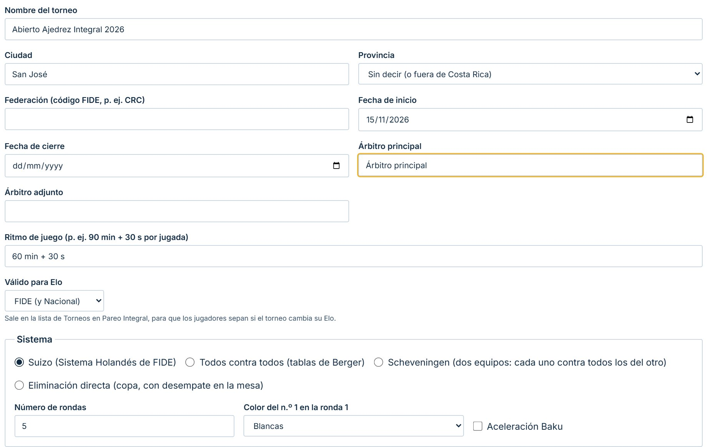
Los datos del torneo. Lo que escribes se guarda solo, sin botón de «Guardar».
En Sistema, elige el suizo (Sistema Holandés de FIDE), todos contra todos, Scheveningen o eliminación directa, y el número de rondas.
El color del n.º 1 en la ronda 1 sale del sorteo del árbitro. La aceleración Baku es para torneos grandes.
Revisa los puntos (por omisión 1, ½ y 0, y 1 para el bye del pareo) y los desempates, en orden. Por omisión trae BH-C1, BH, SB, DE y WIN; con «Agregar un desempate» se suma otro.
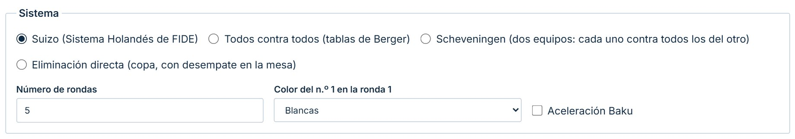
El sistema y las rondas.
Antes de la ronda 1
El sistema y los puntos no se pueden cambiar una vez emparejada la primera ronda. El número de rondas sí se puede subir durante el torneo, pero nunca por debajo de las que ya se emparejaron. Los desempates deben publicarse antes del torneo, como pide el C.07: por eso conviene ponerlos en las bases y en Pareo Integral el mismo día.
Paso 2
Inscribir a los jugadores
Hay tres maneras, y se pueden combinar:
Uno por uno, con el formulario «Agregar un jugador»: apellidos y nombre, institución, categoría, Elo FIDE, título, federación, ID FIDE, sexo y fecha de nacimiento. Solo el nombre es obligatorio.
Pegar una lista: uno por línea, con los datos separados por punto y coma (Nombre; Elo; Título; Federación; ID FIDE). Sirve copiar las columnas de una hoja de cálculo.
Desde una lista de Elo: FIDE (estándar, rápido o blitz) o el Elo Nacional, con «Buscar».
También se puede subir el archivo de la inscripción (Excel, CSV o Word) en la ficha Torneo, con «Subir la lista de jugadores».
Abre Pegar una lista de jugadores, pega la lista y toca Agregar la lista.
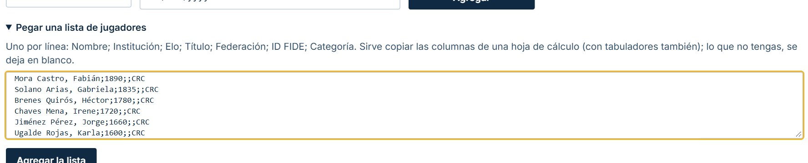
Diez jugadores pegados de una vez.
Revisa la lista de Inscritos: el número de cada jugador sale del orden inicial de FIDE (Elo, después título, después nombre) y queda fijo al emparejar la ronda 1. Con Editar se corrige un dato.
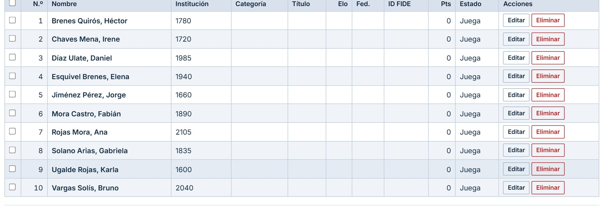
Los inscritos, ordenados como pide FIDE.
Inscripción tardía y retiros. Quien se inscribe tarde se intercala en el lugar que le toca por Elo, sin cambiar el orden de los demás; en las rondas que no jugó cuenta como ausente. Retirar a un jugador lo saca de las rondas siguientes y lo que jugó sigue contando; eliminarlo solo se puede si todavía no jugó ninguna ronda.
Paso 3
Antes de emparejar: byes y ausentes
En la ficha Rondas, antes de cada ronda, aparece la lista de jugadores con lo que cuenta la ronda para cada uno:
Opción
Qué cuenta
Juega
Entra al emparejamiento.
Bye pedido (½)
Pidió no jugar esa ronda, con medio punto (si las bases lo permiten).
Ausente (0)
No juega y suma cero.
Bye de punto entero
Un punto sin jugar. FIDE lo desaconseja: la página pide confirmarlo.
El botón No viene lo marca en un toque, y se puede deshacer. Arriba, un repaso avisa quién no tiene categoría o Elo: es solo un aviso, no bloquea el emparejamiento.
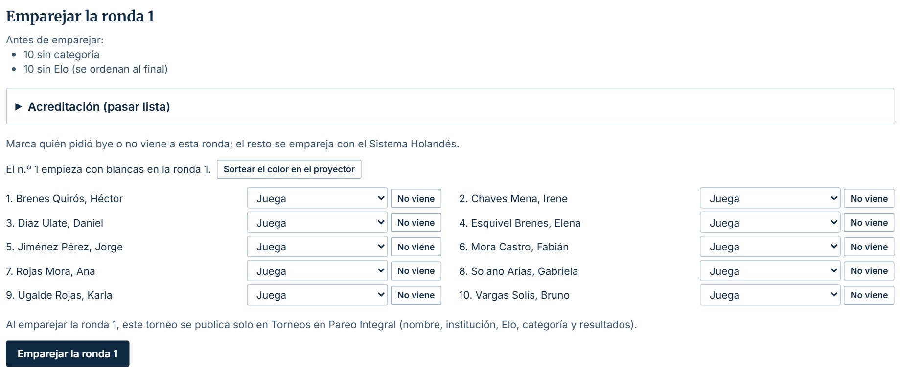
Antes de la ronda 1: quién juega, quién pidió bye y el aviso de lo que falta.
C.07 (2026) · arts. 15 y 16
Los byes y las rondas no jugadas cuentan distinto en los desempates: el C.07 las suma contra un rival ficticio con el mismo puntaje del jugador, con el tope del art. 16.4. Pareo Integral lo hace solo, pero el árbitro tiene que saberlo para explicar una clasificación. Las revistas 3, 4 y 7 lo explican con ejemplos, y el Taller de la Aula tiene casos para practicarlo.
Paso 4
Emparejar la ronda y anotar los resultados
Toca Emparejar la ronda 1. Pareo Integral calcula los emparejamientos con el Sistema Holandés y muestra las mesas en el orden de FIDE. Si sobra un jugador, recibe el bye del pareo.
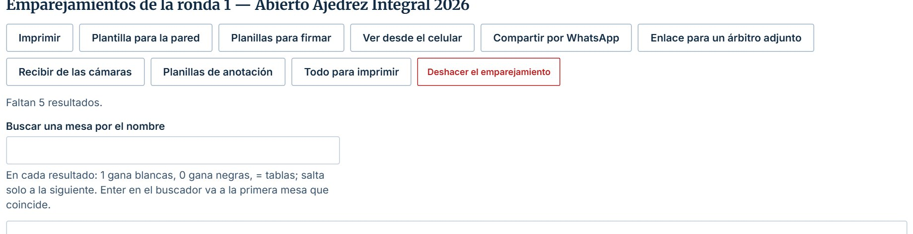
La ronda emparejada, con sus herramientas: imprimir, la plantilla para la pared, las planillas y el enlace para un árbitro adjunto.
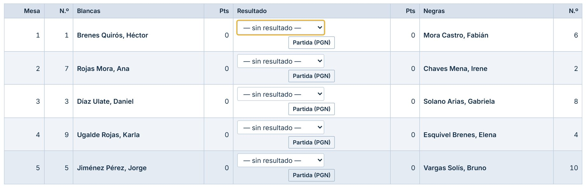
Las mesas de la ronda 1, sin resultados todavía.
Anota el resultado de cada mesa en su lista: 1-0, ½-½ o 0-1; +/− y −/+ son incomparecencias (gana quien vino) y −/− es que no vino ninguno. Con el teclado es más rápido: 1 gana blancas, 0 gana negras, = tablas, y salta solo a la mesa siguiente.
Arriba de las mesas, la página dice cuántos resultados faltan. Con todos anotados ya se puede emparejar la ronda siguiente.
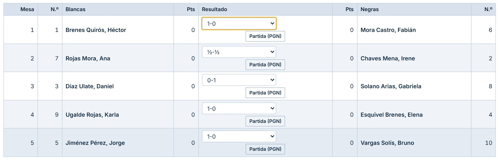
La ronda 1 con todos sus resultados.
Corregir y deshacer. Un resultado de una ronda vieja se puede corregir, pero las rondas siguientes no se vuelven a emparejar. «Deshacer el emparejamiento» solo se puede en la última ronda, y con los mismos datos sale la misma ronda. Para un cambio puntual sin deshacerla (quien llegó tarde, invertir los colores de una mesa, sacar a alguien) está Modificar la ronda sin deshacerla, debajo de las mesas: cada cambio queda en las incidencias de la ronda.
Quién no ha llegado. Con «Empezó la ronda: anotar la hora», la página sabe a qué hora arrancó y, con «No ha llegado», avisa cuando cae el tiempo de espera de las bases y anota la incomparecencia. La decisión de declarar la partida perdida sigue siendo del árbitro (Leyes 2023, art. 6.7).
Paso 5
La ronda en juego: imprimir, compartir y los adjuntos
Con la ronda emparejada, la barra de la ficha Rondas tiene todo lo que se usa en la sala:
Imprimir y Plantilla para la pared: el pareo para pegar en la pizarra.
Planillas para firmar y Planillas de anotación, o Todo para imprimir de una vez.
Ver desde el celular y Compartir por WhatsApp: un enlace con su QR para que jugadores y familias vean la ronda y la clasificación.
Enlace para un árbitro adjunto: el enlace (o el código de 8 letras) con el que cada adjunto anota los resultados de sus mesas desde la mesa del árbitro.
Recibir de las cámaras: los resultados que leen las cámaras de Notara, que el principal confirma.
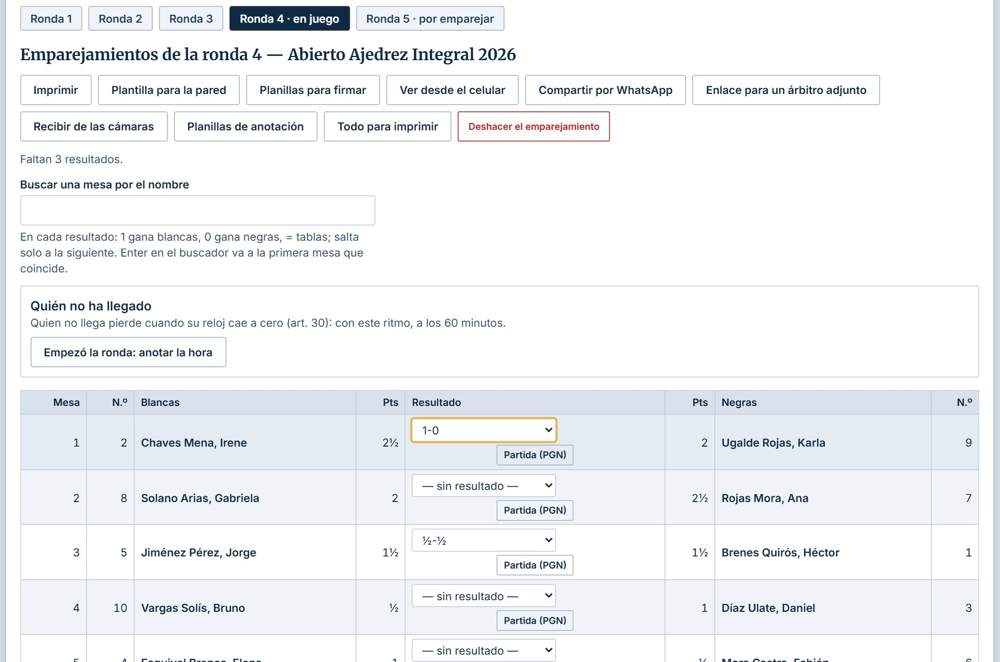
La ronda 4 en juego: faltan tres resultados.
El centro del evento
El torneo de un vistazo
La ficha Centro del evento es la pantalla del árbitro principal durante la ronda. Se pone al día sola:
La ronda en juego: cuántas mesas terminaron, con una barra de avance.
Para confirmar: lo que espera la decisión del principal, como una lectura de las cámaras o una segunda jugada ilegal que anotó un adjunto.
Árbitros adjuntos: con «+ Agregar árbitro» se crea uno por cada grupo de mesas; cada uno recibe su código.
Cámaras de Notara y los enlaces para compartir: el de las familias y el público, el de los adjuntos que entran con el código y el de la mesa del árbitro.
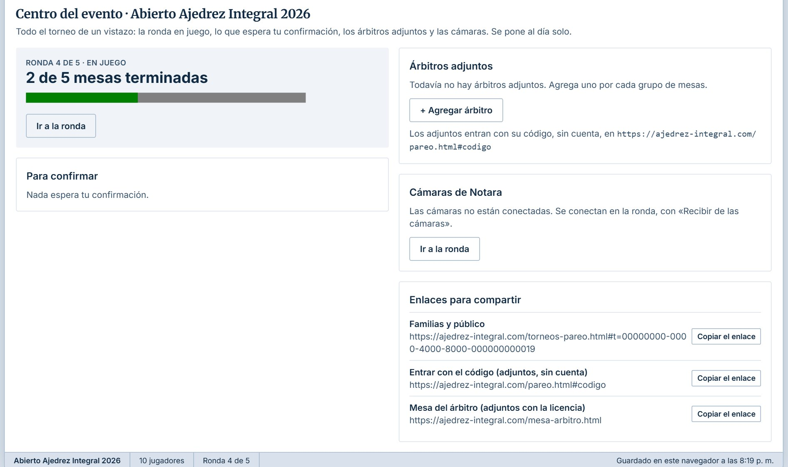
El centro del evento: 2 de 5 mesas terminadas en la ronda 4.
Clasificación
La clasificación, los desempates y la tabla cruzada
La ficha Clasificación cuenta solo las rondas que tienen todos sus resultados: con la ronda 4 en juego, la tabla es la de la ronda 3. Ordena por puntos y después por los desempates en el orden que se eligió en Torneo. Si dos jugadores quedan iguales en todo, comparten el puesto y lo resuelve el árbitro.
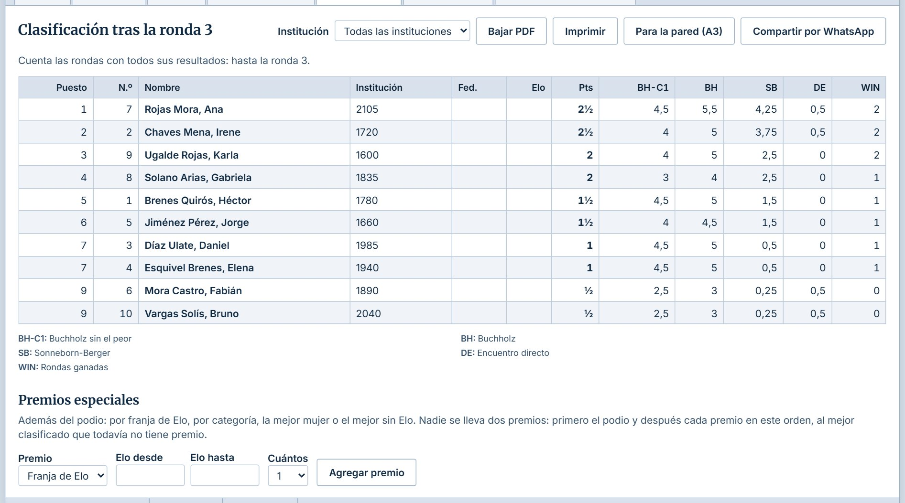
La clasificación tras la ronda 3, con cada desempate en su columna y la leyenda debajo.
Bajar PDF, Imprimir, Para la pared (A3) y Compartir por WhatsApp.
Premios especiales: por franja de Elo, categoría, la mejor mujer o el mejor sin Elo. Nadie se lleva dos premios: primero el podio y después cada premio en el orden de la lista.
Si las bases lo piden, el desempate en la mesa (por ejemplo, un Armagedón) se juega y se anota ahí mismo.
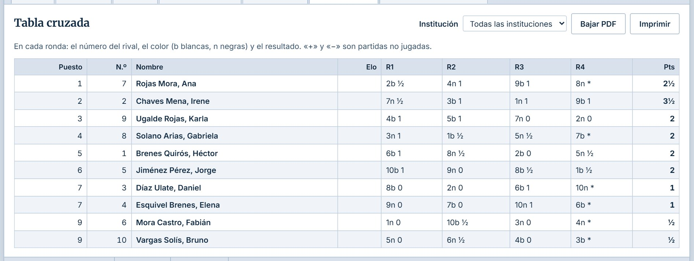
La tabla cruzada: en cada ronda, el número del rival, el color (b o n) y el resultado.
Para explicar una clasificación, la herramienta «Desempates explicados» y las calculadoras de la Aula desglosan cada número ronda por ronda: de dónde sale el Buchholz de un jugador, qué rival se cortó y por qué.
Archivos y comprobador
Publicar, el TRF y el respaldo
La última ficha guarda todo lo que sale del torneo:
Publicar en «Torneos en Pareo Integral»: muestra el enlace público y se pone al día con cada resultado. Antes del torneo se puede abrir la inscripción desde la página pública: las familias inscriben y el árbitro acepta o rechaza a cada uno.
Bajar el TRF para FIDE: el archivo del informe de Elo, con las rondas que tienen todos sus resultados.
Bajar una copia (.json): el torneo entero, para abrirlo en otra computadora o guardarlo de respaldo.
Abrir un torneo: un TRF de Swiss-Manager, Vega u otro programa, o una copia .json; se pueden seguir emparejando las rondas que faltan.
Comprobador de emparejamientos: vuelve a emparejar cada ronda de un TRF con el Sistema Holandés y muestra dónde difiere.
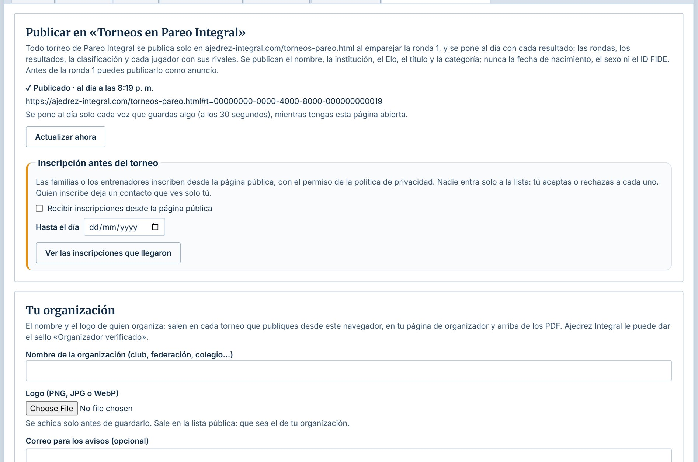
La publicación del torneo y la inscripción desde la página pública.
El respaldo es tuyo. Si se borran los datos del navegador, el torneo se pierde con ellos. Al terminar cada ronda, baja la copia (.json) o guarda tus torneos en tu cuenta.
La mesa del árbitro
Los adjuntos anotan desde el celular
Por IA Oscar Angulo Cubero
En un torneo grande, el principal no puede estar en todas las mesas. La mesa del árbitro (ajedrez-integral.com/mesa-arbitro.html) es la pantalla de cada árbitro adjunto: ve solo sus mesas de la ronda en juego y anota los resultados, las jugadas ilegales, las irregularidades y las notas. Todo le llega al Pareo Integral del principal, que lo acepta en el torneo.
Al entrar, la mesa pregunta sobre qué vas a trabajar: un torneo de Pareo Integral, uno publicado en chess-results o, si diriges solo, sin adjuntos, la opción «Dirijo solo».
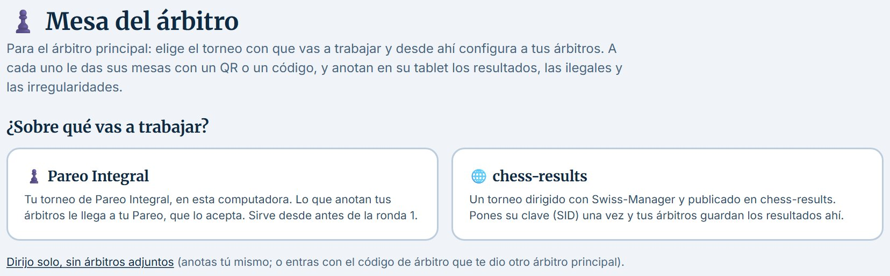
La entrada: Pareo Integral o chess-results.
Paso a paso, para el adjunto
El principal crea al adjunto en el Centro del evento (o con «Enlace para un árbitro adjunto» en Rondas) y le pasa el enlace o el código de 8 letras.
El adjunto pega el enlace o escribe el código en Enlace o código de árbitro y toca Conectar. Quien no tiene la licencia entra con el código en pareo.html#codigo.
Aparecen sus mesas, con el torneo y la ronda. En cada una toca el resultado (1-0, ½-½, 0-1 u otro). La mesa dice «Resultado aceptado por el árbitro principal» cuando ya entró al torneo.
Junto a cada jugador están Ilegal e Irregularidad. Con la segunda jugada ilegal del mismo jugador, la mesa avisa «Segunda ilegal: decide el resultado».
Debajo, el formulario de notas: mesa, tipo (incidencia o nota), artículo y qué pasó. Con «Anotar y avisar al principal» le llega a su pantalla.
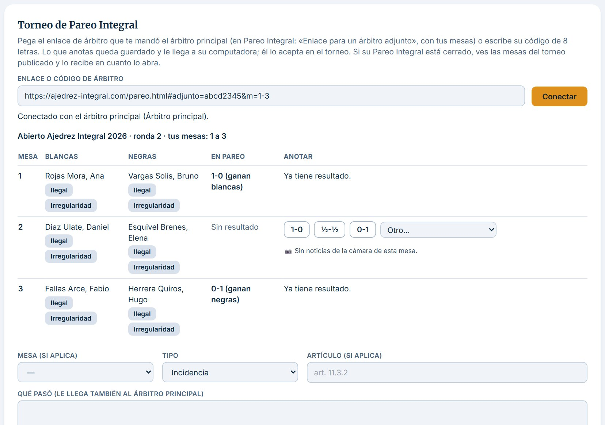
Las mesas 1 a 3 del adjunto, conectado al torneo: la mesa 1 ya tiene su resultado.
Leyes 2023 · art. 7.5.5
La segunda jugada ilegal completada por el mismo jugador hace perder la partida, salvo que el rival no pueda dar mate por ninguna serie de jugadas legales: entonces son tablas. La mesa avisa, pero quien decide es el árbitro, mirando la posición.
La bitácora. Cada cosa que anota el adjunto queda en su bitácora con la hora de Costa Rica y no se borra. Al final se baja en PDF o Word para el informe del torneo.
Lista de control
Un día de torneo, de principio a fin
La víspera
Torneo creado, con el sistema, las rondas, los puntos y los desempates de las bases.
Jugadores inscritos y revisados: Elo, título, federación e ID FIDE si va para Elo.
Los adjuntos creados, cada uno con su grupo de mesas y su código.
Una copia del torneo (.json) guardada.
Cada ronda
Marcar byes y ausentes, y emparejar.
Imprimir el pareo para la pared y las planillas.
«Empezó la ronda» y, si alguien no está, «No ha llegado».
Resultados: los anota el principal o llegan de los adjuntos; revisar «Para confirmar».
Con todos los resultados, mirar la clasificación y bajar la copia.
Al terminar
Clasificación final y premios especiales.
El TRF para FIDE o para el Elo Nacional.
Las bitácoras de los adjuntos y el informe del torneo.
Si algo no cuadra, el comprobador de emparejamientos dice si una ronda salió como manda el Sistema Holandés, y el manual de Pareo Integral responde las dudas de cada ficha.
Fuentes de esta edición. Pareo Integral y la mesa del árbitro tal como funcionan en noviembre de 2026 (manual de uso en pareo-manual.html). Reglas del Sistema Holandés de FIDE, C.04.3 (2026); Reglamento de Play-off y Desempates C.07, desde el 1-mar-2026; Leyes del Ajedrez FIDE, desde el 1-ene-2023. Los jugadores y el torneo de las capturas son inventados.